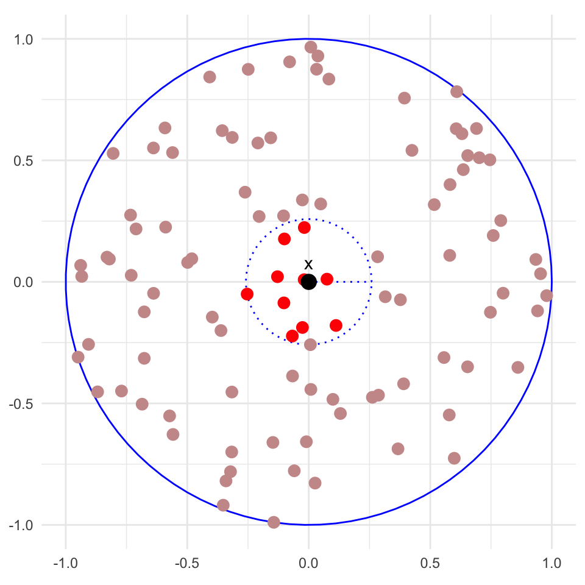

\(K(X, X_i) = \exp\left( -\tfrac{1}{2 \gamma^2} \Vert X - X_i \Vert_2^2 \right)\) is a kernel function that measures similarity between \(X\) and \(X_i\).
\(\gamma\), the bandwidth, is a hyperparameter that can be tuned with cross validation.
The coefficients \(\alpha_i\) can be computed in closed form, and depend on the ridge penalty \(\lambda\).
This nonparametric model has two notable properties:
It defines its predictions through similarity between training points (rather than a fixed set of parameters \(\beta\))
Its degrees of freedom scales with \(n\) (the number of training points) rather than being fixed at \(p\) (the number of covariates).
The Best Possible Model?
There are many advantages of this nonparametric model:
It is infinitely powerful. Recall that an infinite Fourier series can represent (almost) any function, so this predictive model can represent almost any \(\mathbb E[Y|X]\). (In contrast, linear regression can only represent linear \(\mathbb E[Y|X]\), polynomial regression with \(d^\mathrm{th}\) degree polynomials can only represent \(\mathbb E[Y|X]\) that are polynomials of degree \(d\), etc.)
It is simple. Amazingly, we can write this complex model in a single line of math, and we can even derive the \(\alpha_i\) coefficients in closed form.
We can control its variance. Even though the model is infinitely powerful, with a large enough ridge penalty \(\lambda\) we can construct a model that balances bias and variance well.
So why would we ever consider using anything else? Why would a linear model ever be preferable to this?
The Drawback
While this model is extremely powerful (and often very useful), it suffers from a phenomenon known as the curse of dimensionality.
Briefly, this model (potentially) becomes exponentially less effective as we increase the number of covariates \(p\).
To understand this phenomenon, we will consider a related nonparametric model known as k-nearest neighbours (kNN) which will be easier to analyze.
Our Second Nonparametric Model: k-Nearest Neighbours
we see that it is largest when \(X\) is close to \(X_i\), and decays to zero as \(X\) moves away from \(X_i\).
It is likely that this kernel function will be \(\approx 1\) for only a few training points \(X_i\) that are close to \(X\), and \(\approx 0\) for most other training points.
Therefore, what if we make the following approximation to the kernel function:
\[
K(X, X_i) \approx \begin{cases}
1 & \text{if } X_i \text{ is one of the $k$ nearest neighbours of } X \\
0 & \text{otherwise}
\end{cases}
\]
where the nearest neighbours of \(X\) are the \(k\) training points \(X_i\) that are closest to \(X\) in Euclidean distance.
Here, \(k\) (the number of nearest neighbours) is a hyperparameter that we will touch upon in a second.
This plot depicts the k-nearest neighbours (kNN) function with \(k=3\). The red points are the 3 nearest training \(X_i\)s of \(X = 85\) (the red vertical line).
We could now approximate the \(\alpha_i\) coefficients with an equal weighting of the responses of the \(k\) nearest neighbours:
\[
\alpha_i \approx \begin{cases}
\frac{1}{k} Y_i & \text{if } X_i \text{ is one of the $k$ nearest neighbours of } X \\
0 & \text{otherwise}
\end{cases}
\]
The result is the following k-nearest neighbours (kNN) predictor:
where \(N_k(X)\) is the set of indices of the \(k\) nearest neighbours of \(X\).
TipkNN is a Common Method
While we have derived kNN as an approximation to kernel ridge regression, it is a very well-used method in practice. (It is arguably the most common nonparametric method, and used in practice more than kernel ridge regression.)
The above plots show the kNN regression function for different values of \(k\).
\(k=1\) and \(k=40\) are poor fits and have high risk, while \(k=5\) is likely a good predictor.
When \(k\) is too large or too small, we are not balancing bias and variance well. But which extreme are we in?
Note(Intuitive) Bias-Variance Tradeoff for kNN
As \(k \to 1\), our prediction at a point \(X\) depends only on a single training point \((X_i, Y_i)\), so it is very dependent on our specific training sample.
As \(k \to \infty\), all of our training points are used to make predictions at any point \(X\). \(\hat{f}_\mathcal{D}(X) \to \frac{1}{n} \sum_{i=1}^n Y_i\) becomes the sample mean of the \(Y_i\), which is not going to be a good estimate of \(\mathbb E[Y|X]\) regardless of our specific training sample.
Thus, small \(k\) leads to high variance, while large \(k\) leads to high bias.
Degrees of Freedom of kNN
Another way we can analyze the bias-variance tradeoff of kNN is through its degrees of freedom.
First, we note that the predictions on the training data \(\hat{\boldsymbol Y} = [ \hat Y_1, \ldots, \hat Y_n ]^\top\) can be written in matrix form as:
\[
\hat{\boldsymbol Y} = \underbrace{\boldsymbol H}_{n \times n} \underbrace{\boldsymbol Y}_{n \times 1},
\qquad
H_{ij} = \begin{cases}
\frac{1}{k} & \text{if } X_j \text{ is one of the $k$ nearest neighbours of } X_i \\
0 & \text{otherwise}
\end{cases}
\]
For predictive models that can be written in this form, recall that the degrees of freedom is given by:
Increasing \(k\) leads to fewer degrees of freedom (i.e. a less flexible model, lower variance, etc.), but note that \(\mathrm{df} = O(n)\) for any fixed \(k\).
Thus, kNN is non-parametric because its flexibility increases with the amount of training data.
The Curse of Dimensionality
Now, onto the bad stuff.
With kNN as our easy-to-analyze nonparametric model, we can now analyze how its performance scales with the number of covariates \(p\).
For kNN (or nonparametric models in general) to perform well, \(X\) needs to have “similar enough” training points \(X_i\) nearby.
However, as the number of covariates \(p\) increases, Euclidean distance breaks down as a meaningful measure of similarity, making it unlikely that \(X\)’s nearest neighbours are actually similar.
Euclidean Distance Breaks Down in High Dimensions
To understand why distance breaks down in high dimensions, consider the following thought experiment:
Suppose we have \(x_1, x_2, \ldots, x_n\) training points distributed uniformly within a \(p\)-dimensional ball of radius 1.
For a test point \(x\) at the center of the ball, consider its \(k = n/10\) nearest neighbours.

The red points are the \(n/10\) nearest neighbours of \(x\) (the black point at the center), which are all contained within the inner dotted circle.
The inner circle is a lot smaller than the outer circle, but this \(2D\) plot gives the wrong intuition for higher dimensions!
\(p=2\)
What is the radius of the inner circle relative to the outer circle?
In expectation, the \(n/10\) nearest neighbours of \(x\) will take up \(10\%\) of the area of the outer circle.
Since the area of a circle scales with the square of its radius, the inner circle has a radius of \(\sqrt{0.1} \approx 0.316\).
\(p=3\)
Now consider \(p=3\) dimensions (so that our radius 1 ball is a unit sphere).
The sub-space containing its \(n/10\) nearest neighbours is now a sphere with \(10\%\) of the volume of the outer sphere.
Since the volume of a sphere scales with the cube of its radius, the inner sphere has a radius of \(0.1^{1/3} \approx 0.464\).
Most Points Live Near the Boundary as \(p\) Increases
More generally, for \(p\) dimensions, the radius \(r\) of the inner ball containing the \(n/10\) nearest neighbours is given by:
\[
r = 0.1^{1/p}
\]
where \(p\) is the number of dimensions (covariates). This number grows very quickly as \(p\) increases:
When \(p=10\), \(r = (0.1)^{1/10} \approx 0.794\)(!)
When \(p=100\), \(r = (0.1)^{1/100} \approx 0.977\)(!!)
When \(p=1000\), \(r = (0.1)^{1/1000} \approx 0.999\)(!!!)
In other words, in a \(1000\)-dimensional space, even the \(10\%\) of nearest neighbours are going to live on the boundary of the unit ball!
Why is this problematic?
As dimensionality increases, all points become maximally far apart from one another.
With such large distances, we can’t meaningfully distinguish between “similar” and “different” inputs.
Distance becomes (exponentially) meaningless in high dimensions.
How to Overcome this Curse of Dimensionality
Nonparametric methods, which typically make predictions from distance-based similarity, become exponentially less effective as the number of covariates \(p\) increases.
To meaningfully distinguish between “similar” and “different” inputs, we need an exponentially large amount of training data \(n\) as \(p\) increases.
The theoretical risk of kNN (and other nonparametric methods) after we tune \(k\) to optimally balance bias and variance scales as:
To halve the variance, we only need to increase \(n\) by a factor of \(2\) (regardless of \(p\)).
(Of course, the bias \(C_1^{(\mathrm{OLS})}\) may be large if \(\mathbb E[Y|X]\) is not linear.)
In Practice
Surprisingly, kNN and other nonparametric methods can work well in practice, even for moderate \(p\).
For example, on the classic classification dataset MNIST (\(p=784\)), kNN achieves \(97.3\%\) accuracy from just \(60,000\) training points.
The reason for this empirical success cannot be easily formalized, but the intuition is that real-world data often has “low-dimensional structure” (e.g. images of handwritten digits lie on a low-dimensional manifold within \(\mathbb R^{784}\)) where Euclidean distance is still meaningful.
So you should not avoid nonparametric methods altogether on high-dimensional data, but be aware of their limitations.
Summary
kNN is a simple nonparametric method that makes predictions based on the \(k\) nearest training points.
However, nonparametric methods like kNN suffer from the curse of dimensionality, where distance becomes meaningless in high dimensions, and exponentially more training data is required to reduce risk.
High dimensional spaces are weird and defy our common \(\mathbb R^2\) and \(\mathbb R^3\) intuitions.